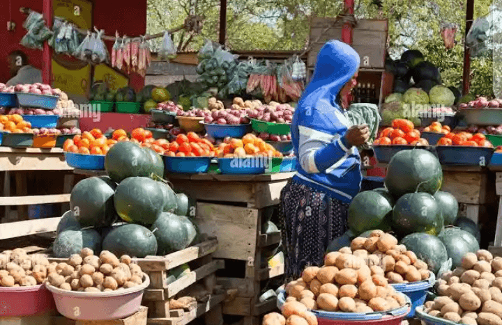

Di Best Place Make Get Fresh Toro For Yola
Jambutu market na biggest place fo fresh toro for Yola. Dem bring vegetable na fruit from farm come here. All person from Yola come here make get fresh toro for dia family. Dem get all kind fresh toro wey grow for Adamawa na even oda place.